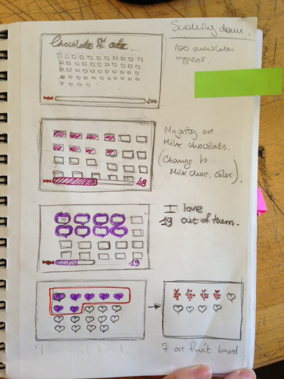
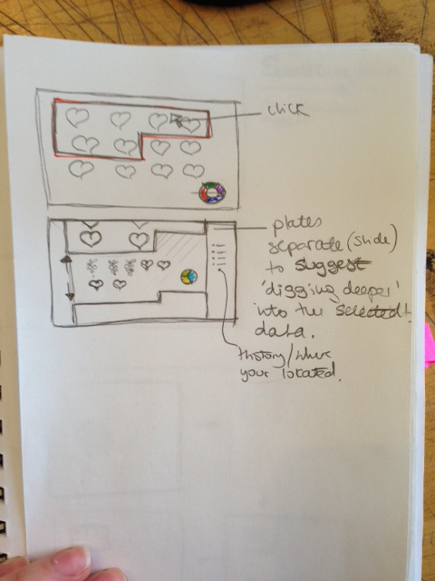
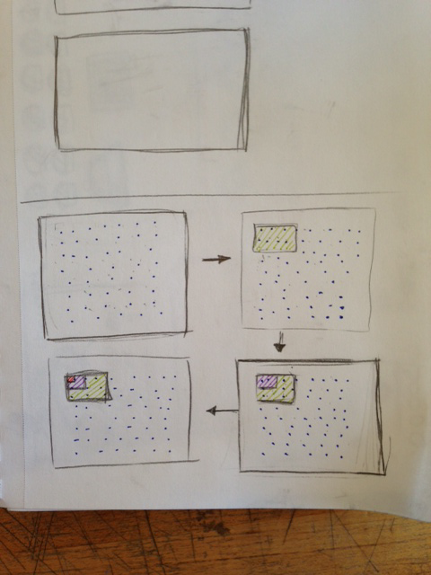

Explore the "100 things data project" from Information Architecture class presented in an interactive website. The 100 things data is a collection of "100 chocolates I ate". The objective of the website is to tell a story about the chocolates and their attributes supported by information graphics, focusing only on exploring one path. The user, however will have the ability to navigate around the rest of the chocolates to explore further into their properties. The visual treatment of the website will be clean and simple, employing complementary candy-shop colors.
  